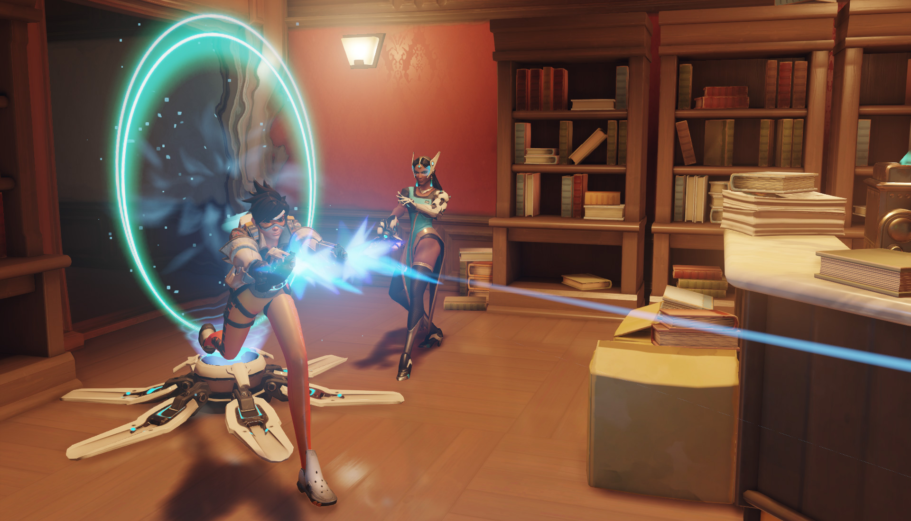

L’arme de Symmetra émet un rayon à courte portée qui se focalise sur un ennemi proche, lui infligeant des dégâts continus qui augmentent sur la durée. Le projecteur peut aussi envoyer une boule d’énergie surchargée qui inflige des dégâts importants.
Symmetra installe une petite tourelle qui projette automatiquement des décharges réduisant la vitesse de l’ennemi le plus proche à sa portée. Plusieurs tourelles peuvent être déployées simultanément sur le champ de bataille.
Symmetra enveloppe un allié dans un bouclier photoformé qui absorbe les dégâts en suivant l’allié qu’il protège.
Symmetra place un socle d’arrivée à sa position actuelle et le connecte à celui placé au point de départ de son équipe. Les alliés peuvent voyager instantanément d’un socle à l’autre, ce qui leur permet de retourner rapidement au combat après avoir été abattus.
Symmetra déploie un générateur à grande portée qui fournit des boucliers à toute son équipe.